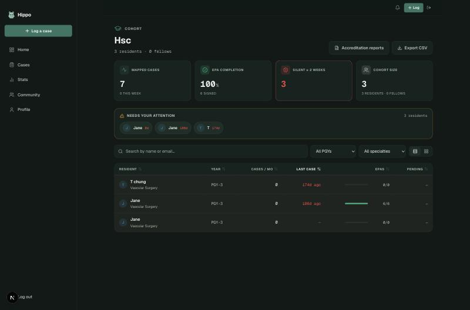
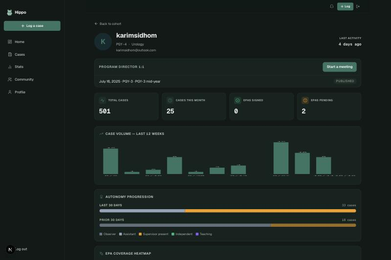
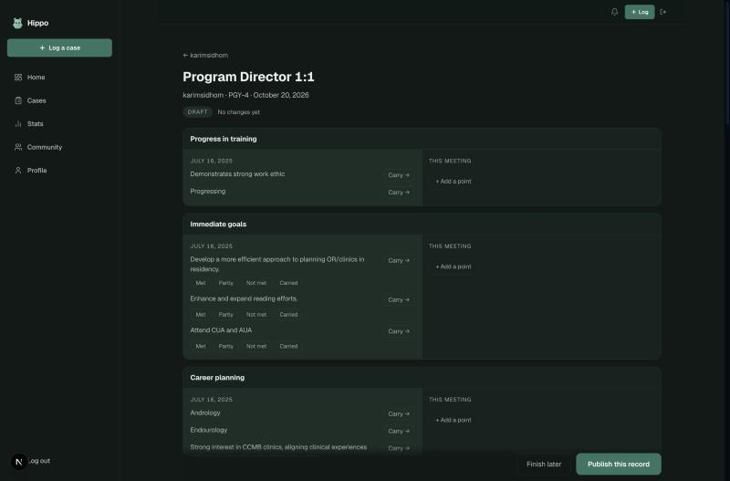
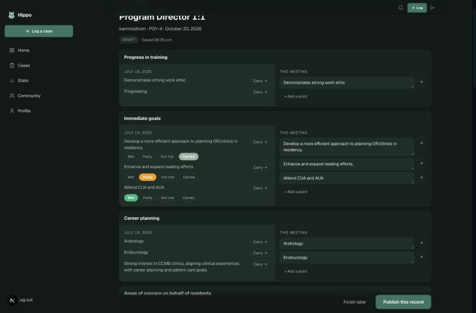
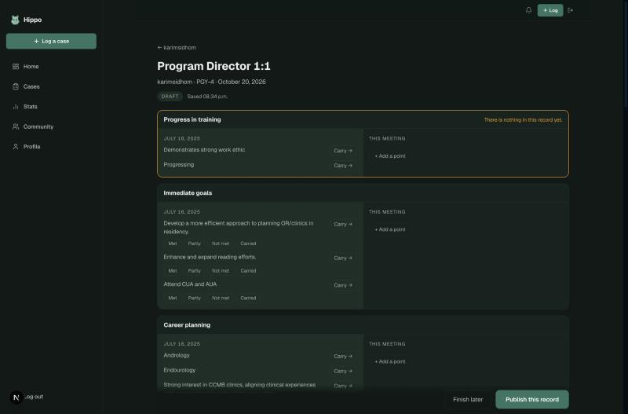
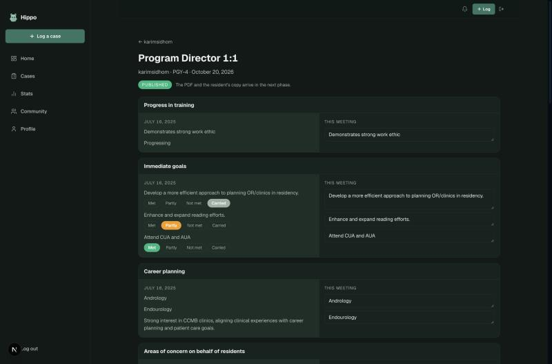
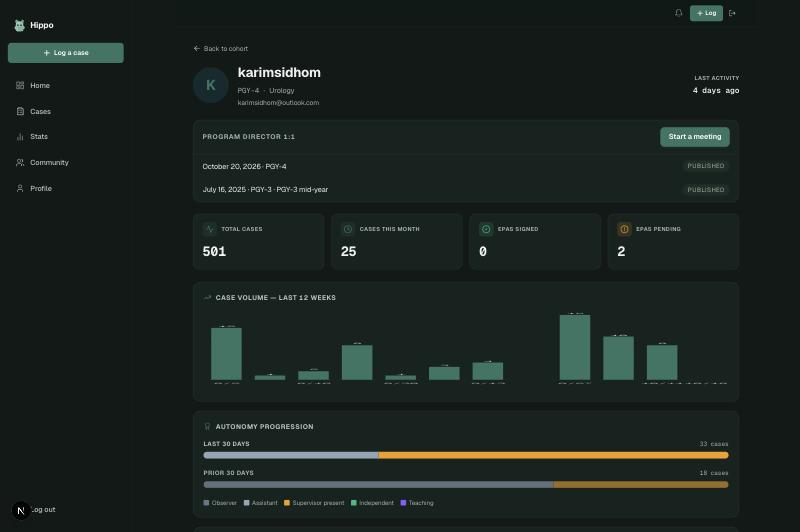

University of Manitoba Urology
Your semi-annual resident meeting letter, with last meeting already on the page. Same eight sections, same order, same wording. The difference is that you stop retyping what has not changed.
Your cohort page lists the residents on your program. Case volume, EPA completion and who has gone quiet are on the front screen; you click through to the one you are meeting.

On a resident's page, their meeting history sits at the top, above the case and EPA data. Here there is one record: 16 July 2025, PGY-3 mid-year, published.

This is the part that matters. Every section shows July on the left and today on the right, laid out the way your letter is: progress in training, immediate goals, career planning, concerns from the resident then from faculty, T-RES, CBD levels, Entrada reminders.
The left side is read only. You cannot change history by accident. The right side is today, and it is the only thing you fill in.

Press Carry on any point from July and it moves to today's column, where you can edit the wording if it has moved on. Things that have not changed cost one tap each instead of a retype.
Immediate goals works slightly differently, and this is the one thing the app asks for that paper does not. Under each goal you set in July there are four answers: Met Partly Carried and Not met.
On paper, goals get restated every six months and nobody records whether they happened. Here it is one tap, and next July you can see the whole run of them. Publishing is blocked until every goal from last time has an answer.

If something is missing, the record says so against the section it belongs to and takes you there, rather than showing one unhelpful error at the bottom.

Publishing locks the record. Your exam tables and curriculum ticks stay on the resident, so every sitting you have ever entered is still there next time and a module ticked in PGY-1 stays ticked.
Your signature line stays blank. The app will never sign anything for you.


The record is complete and it carries forward. Two pieces are not built yet:
Everything needed to print that letter is already frozen when you publish, so the PDF is a rendering job rather than more data entry.